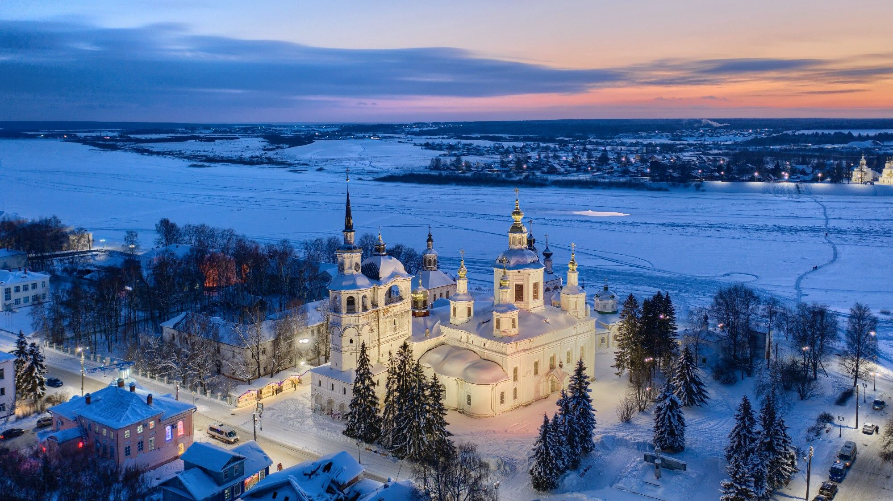

Великий Устюг
Купеческая столица СевераО месте: Город-музей, сохранивший панораму белокаменного зодчества и статус одного из богатейших торговых центров допетровской Руси.
Статус «Великий» город получил благодаря роли ключевого узла, связывавшего центр России с Сибирью и Европой. Здесь на небольшом пространстве сохранилось почти три десятка храмов XVII–XVIII веков.
Дата основания: 1147 год.
Культурно-историческое наследие:
Соборное дворище: главный архитектурный ансамбль на набережной Сухоны.
Землепроходцы: родина Семёна Дежнёва и Ерофея Хабарова, открывших новые земли для страны.
Северная чернь: уникальный промысел гравировки по серебру, известный с XVII века.
Зимняя сказка: официальная резиденция российского Деда Мороза.
Исторический факт: В XVII веке по доходам в государственную казну Великий Устюг занимал одно из первых мест в стране, опережая многие крупные города.